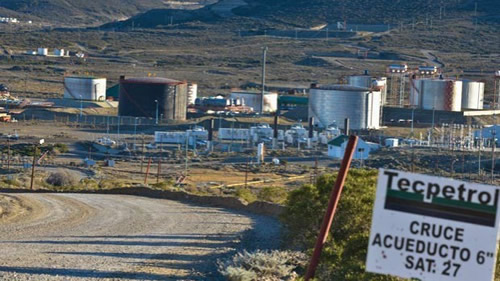

Real Chubut - Agencia de Noticias


TECPETROL: LA VACA VIVA DE NACION Y PROVINCIA
Por: Leandro Moyano

Muchas veces hemos escuchado que “en las crisis están las oportunidades” y vaya que es cierto, en el desarrollo de la situación que se vive en los yacimientos concesionados a TECPETROL, donde se genera gran parte del imperio multimillonario de Paolo Rocca y del Grupo TECHINT, íntimo amigo del gobierno nacional.
A más de un mes de aquella gesta histórica de los trabajadores de TECPETROL ante el inminente despido de 250 petroleros, donde con un gran sentido de pertenencia y en pos de proteger sus puestos de trabajo permanecieron dentro del yacimiento durante 5 días, poco se ha avanzado en la solución de tan delicada situación. Las razones son variadas, las excusas también y la única certeza es qué; conciliación tras conciliación la incertidumbre laboral sigue en la cabeza de los trabajadores.
Para que entendamos la real situación de TECPETROL debemos remontarnos a varios años atrás, a fines del año 2012 donde el marco regulatorio se transforma en la nueva Ley de Hidrocarburos, desde donde se plantea un antes y un después en las renegociaciones contractuales de áreas petrolíferas entre Estado Provincial y las empresas.
A partir de allí se inician diferentes renegociaciones de áreas, donde entre otros temas se discuten las condiciones del yacimiento El Tordillo, puesto La Mata y La Tapera, explotados por TECPETROL.
La renegociación no solamente mejoró el porcentaje de regalías para el Estado Provincial y municipios (las cuales deberían estar dirigidas exclusivamente a Obras Publicas) sino que además comprometía la inversión de 200 millones de dólares dirigida a la intervención de equipos de torres relacionados con el mantenimiento de la producción durante el periodo de los diez años de prorroga a partir de 2017
La pregunta que surge es: ¿Donde está esa inversión?
Recordemos: periodos de concesión 2017 – 2027. Hoy; septiembre 2017 el grupo TECHINT dice estar trabajando a pérdida… ¿fue una mala negociación?
Veamos: para que sean viables sus números, TECPETROL necesita reducir los costos de perforación, extracción y producción un 30%, costos que en marzo de este año rondaban los US$ 30 por barril.
Dentro de ese llamado “costo”, además de la mano de obra que pareciera ser la única castigada, también se encuentra el costo de empresas contratistas, insumos e impuestos varios, por otro lado, el precio del barril de crudo de exportación ronda los US$ 50 a lo cual el Estado Nacional ya no subsidia como en la época de Cristina Fernández pero si lo hace en cuencas con mayor proyección como la neuquina, por ejemplo.
Y allí está la oportunidad de Rocca, justamente en Neuquén, donde comprometió inversiones por US$2.300 millones en la primera fase hasta el año 2019, en el Yacimiento Fortín de Piedra, Vaca Muerta… ¿la razón? Allí se subsidia el barril desde Nación, aquí se quitan reembolsos por exportación desde nuestros puertos.
Y aquí es donde no se entiende el rol del Ministerio de Hidrocarburos provincial, que debería hacer valer compromisos asumidos y firmados y debería explicar porqué eximio a TECPETROL de la inversión comprometida, reescribiendo en forma de adenda tales compromisos, sin consultar a los gremios ni a su propio jefe, el gobernador Mario Das Neves.
La petrolera del grupo Techint se obligó a sumar un equipo perforador entre julio y agosto 2017, además de realizar con los equipos actuales al menos 5 pozos exploratorios pero en ninguna de las 3 adendas reformuladas con la anuencia del Ministro de Hidrocarburos dice que la condición es despedir trabajadores. El objetivo es claro : reducir el costo un 30% solamente con mano de obra, no se habla de insumos, ni de precio de barril, ni de impuestos, ni de Puertos Patagónicos…y por si fuera poco, no se sube el perforador ni se hacen los exploratorios.
Y en vísperas de una semana definitoria, que iniciará el día lunes 11/09 en Rawson y culminará seguramente el día jueves 14/09 en las puertas de “El Tordillo”, la puja de poderes involucra directamente variados intereses: empresarios, políticos, gremiales, sociales y por supuesto laborales.
Con denuncias cruzadas, veladas amenazas, chicanas y aprietes de todo tipo, la punta del iceberg llamada TECPETROL parece encaminada a ser el marco por donde se mantendrá la actividad petrolera del Golfo San Jorge, situación que mira de reojo tanto PAN AMERICAN como YPF S.A. y CAPSA, estas ultimas con menos preocupación ya que son parte de un esquema de negocios diferentes: lo que pierden en yacimiento lo recuperan en el surtidor, si, cuando usted carga combustible…pero eso será eje de un próximo análisis.
Lo cierto es que “la vaca“de TECPETROL no está muerta, sólo la están poniendo en coma por intereses que no son los del trabajador y esta cuestión la conocen bien los gremios, quienes se han puesto al hombro una crisis inventada por los poderes económicos y políticos actuales, ya no se puede hablar de crisis laboral en TECPETROL, debería hablarse de crisis política y empresarial que pretende resolverse solo despidiendo trabajadores.
Los números no cierran, pero si cierran para Paolo, Mauricio, Juan José y Sergio… Uds. lectores, pongan los apellidos.
PUBLICIDAD